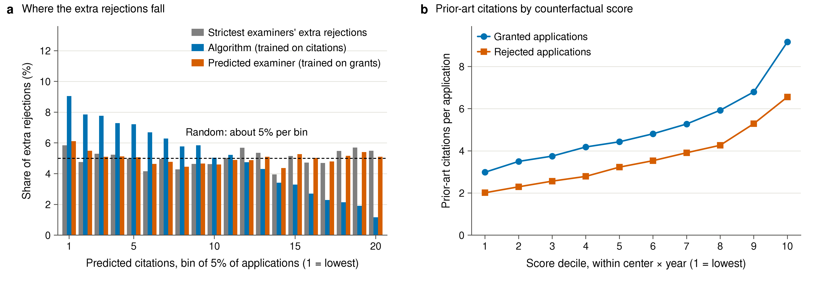
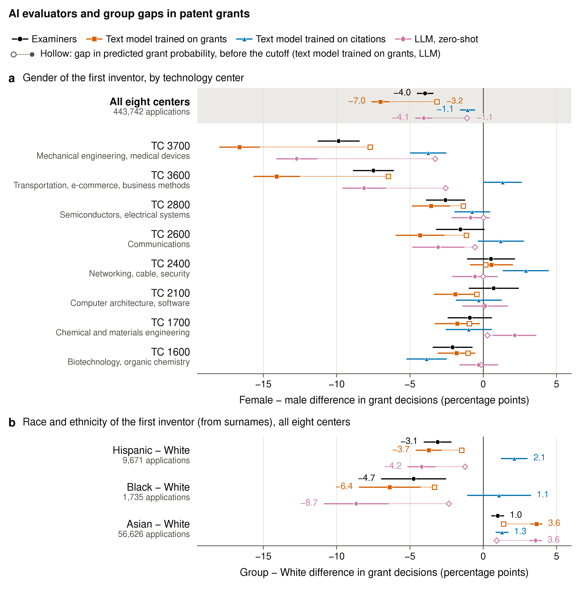

Table 1 is assembled from the same numerical sources as Appendix Table A19. Both graphics are the exact images embedded in the final proposal. F − M denotes female minus male. See docs/proposal_map.csv for the source scripts.
Citations forgone and gender differences under alternative rejection rules, at the stricter examiners’ rejection rates within each cell; F − M is female minus male. Test and imputation samples; 95% CIs from 500 bootstrap draws of art units
| How accurate | For whom | ||||
| Citations lost (%) | Gain over examiners (pp) | Women rejected (%) | F − M grants (pp) | F − M citations at margin | |
| Stricter examiners | 20.0 | 9.5 [7.3, 11.6] | −3.3 [−4.6, −2.1] | 0.31 [−2.74, 4.61] | |
| Random rejections | 21.1 | −1.1 [−10.7, 7.0] | |||
| Model learning citations | 13.8 | 6.2 [−2.4, 13.9] | 8.7 [7.9, 9.5] | −0.3 [−1.2, 0.7] | 0.56 [−0.55, 2.01] |
| Model learning decisions | 18.6 | 1.4 [−8.1, 9.6] | 9.0 [8.3, 9.9] | −4.0 [−5.1, −2.9] | −1.09 [−1.90, −0.38] |

Counterfactual selection and citation outcomes. (a) Where the strictest examiners’ additional rejections fall across 20 bins of predicted citations, compared with the two models at the same rejection rate within each cell (5% per bin). (b) Mean prior-art citations by decile of predicted citations within center and filing year.

Gender and racial differences in grant decisions: (a) female–male differences by technology center; (b) differences relative to White first inventors (surname-inferred), eight centers pooled. Each model grants the examiners’ share of applications in its center. Filled markers: decisions; hollow markers: predicted probabilities before thresholding. Percentage points within art unit × filing year, 95% CIs.